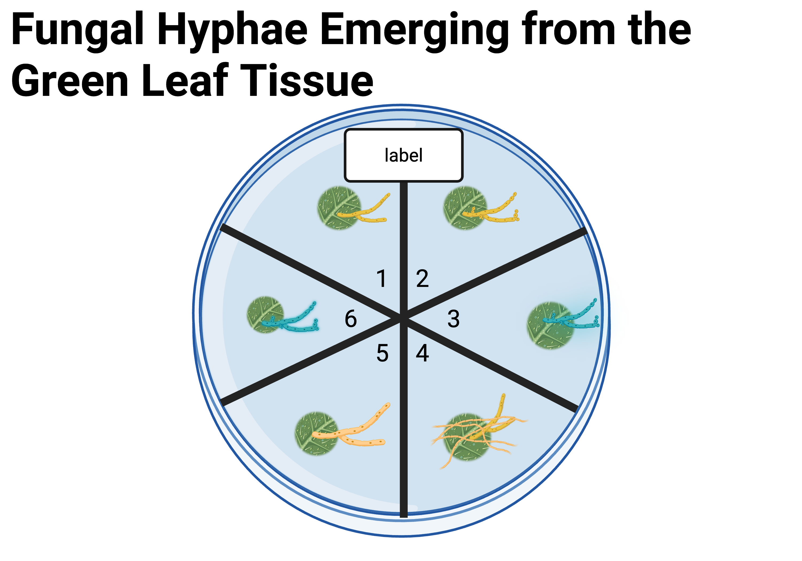

Module 2: Fungal Isolation
BSC 495 — The Hidden World’s Code
Overview
Module 2 builds on Module 1 and covers:
- Lab Prep — preparing PDA and cellophane plates
- Fungal Isolation — transferring endophytes to nutrient agar
- Growth Rate Measurement — tracking and plotting fungal growth
Module 2.1
Instructor Lab Prep
Materials
Consumables
- Cellophane
- 100×15 mm Petri dishes
- 60×15 mm Petri dishes
- Bacteriological agar
- Potato Dextrose Agar (PDA)
Equipment
- Alcohol lamp or Bunsen burner
- Forceps
- Scalpel (metal handle — plastic melts)
Creating a Sterile Environment
- Clean work area with bleach and/or ethanol
- Set 2 torches facing each other over your workspace
- Pour media under the flames (upward airflow blocks contaminants)
- Use a laminar flow hood when available
Warning
Fungi may cause allergic reactions. Always practice sterile technique and consult your instructor if you have concerns.
PDA Plates Recipe
| Step | Detail |
|---|---|
| Suspend | 39 g bacteriological agar in 1 L distilled water |
| Dissolve | Heat to boiling |
| Sterilize | Autoclave at 121 °C / 15 lbs for 15 min |
| Pour | ~8 mL per 60×15 mm plate in sterile environment |
| Store | Refrigerate (~4 °C) until use |
Optional: Adding Antibiotics
- Streptomycin sulfate is commonly used at 50 mg/L in agar
- Add after media has cooled but before pouring plates
- Reduces bacterial contamination in isolate cultures
Cellophane Plates
- Trace the petri dish bottom onto cellophane; cut inside the line
- Stagger discs individually in an autoclavable container with water
- Cover with foil and autoclave (121 °C / 15 lbs for 15 min)
- Use sterile forceps to place one cellophane disc on cooled PDA
Note
Slide technique: Use forceps as a probe (not pinched) to slide individual discs up the container wall — avoids pulling out multiple discs at once.
Disposal
Important
Use red biohazard bags for all petri dishes and materials that contacted fungi — including gloves, paper towels, and kimwipes. Do NOT put in regular trash or recycling.
- Place materials in autoclavable biohazard bag
- Sterilize at 121 °C / 15 lbs for 15 minutes
- Follow institutional protocol for post-sterilization disposal
Module 2.2
Fungal Isolation

Figure 1: Fungal Hyphae Emerging from Green Leaf Tissue. Leaves have different shapes and sizes. Leaf pathologies and diseases can be identified by inspection of leaves. Figure created with BioRender.com.
Where We Left Off
In Module 1 we:
- Documented host plants on iNaturalist
- Collected foliar tissue samples
- Surface sterilized to remove external contaminants
- Plated dissected tissue on water agar plates
Today we will subculture those fungi onto nutrient-rich PDA agar to promote growth and create pure isolate cultures.
Learning Goals
- Practice sterile technique
- Culture and isolate fungi
- Investigate fungal endophytes
- Characterize morphology of fungal cultures
- Create data spreadsheets
- Isolate fungi for molecular extraction and analysis
- Create growth curves
Materials
- Fungal endophyte sample plates
- PDA plates (60×15 mm)
- 70% ethanol
- Kimwipes and paper towels
- Parafilm
- Fine-tip Sharpie
- Flame source for sterilization
- Scalpel
- Ruler
- Forceps
Part I — Why Transfer to PDA?
- Fungal hyphae emerge as white fuzz (or pigmented — brown, greenish)
- Water agar has no nutrients — fungi use nutrients from leaf tissue
- PDA (Potato Dextrose Agar) provides nutrients for robust growth
- Transfer also enables separation of each isolate → pure cultures
- Transfer within 1–3 days of emergence for best results
Recognizing Fungal Growth
Look for hyphae emerging from leaf disc edges — they may be white, brown, or greenish.
- Transfer as soon as growth is visible
- Each new PDA plate = one fungal isolate
- Do NOT mix isolates on the same plate
Part I — Isolation Protocol
| Step | Action |
|---|---|
| 1 | Set up sterile workspace; wear gloves |
| 2 | Label PDA plate with sample ID and date (bottom edge) |
| 3 | Sterilize scalpel with flame; let cool on agar |
| 4 | Cut a small “plug” of water agar containing hyphae |
| 5 | Transfer plug to center of PDA plate |
| 6 | Close lid immediately; seal with Parafilm |
Labeling Plates
- Always label along the bottom edge of the plate
- This keeps the label with the fungus even if the lid falls off
- Label at the edge — don’t obscure light transmission through the plate
- Mark lines on the plate bottom for growth rate tracking
Transferring the Plug — Tips
- Tilt or lift the lid as little as possible
- Keep lid hovering over plate during transfer
- Work under flames if using a torch setup
- Agar will likely stick to scalpel — work quickly and cleanly
Part II — Measuring Growth Rates
- Design a data sheet to record daily measurements
- Trace the edge of the fungal culture with a fine-tip Sharpie
- Measure new growth (mm) at 8 marked edges around the colony
- Average the 8 measurements → daily average growth
- Repeat for 7 days from plating
Example Growth Data
| Measurement | Value |
|---|---|
| 1 | 3.0 mm |
| 2 | 2.5 mm |
| 3 | 2.7 mm |
| 4 | 1.8 mm |
| 5 | 3.1 mm |
| 6 | 2.2 mm |
| 7 | 2.6 mm |
| 8 | 2.1 mm |
| Average | 2.5 mm |
Completing the Analysis
- Calculate average growth rate (distance ÷ time)
- Plot a graph of growth rate over 7 days
- Submit images, data sheet, and growth rate graph in your lab blog post
- Include photographs of your isolates
Summary — Module 2
- Prepare PDA plates (and optional cellophane plates) for subculturing
- Watch water agar plates for hyphal growth from leaf discs
- Transfer plugs within 1–3 days of emergence using sterile technique
- One isolate per PDA plate — maintain pure cultures
- Measure colony growth at 8 points daily for 7 days
- Calculate growth rate and plot a graph
- Document everything in iNaturalist and your lab blog

BSC 495 | Module 2: Fungal Isolation | CC BY Carlos C. Goller